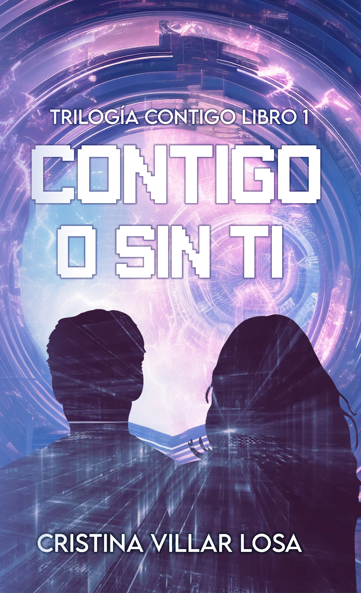
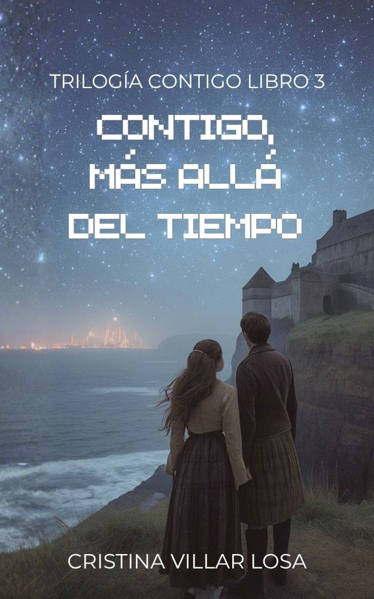
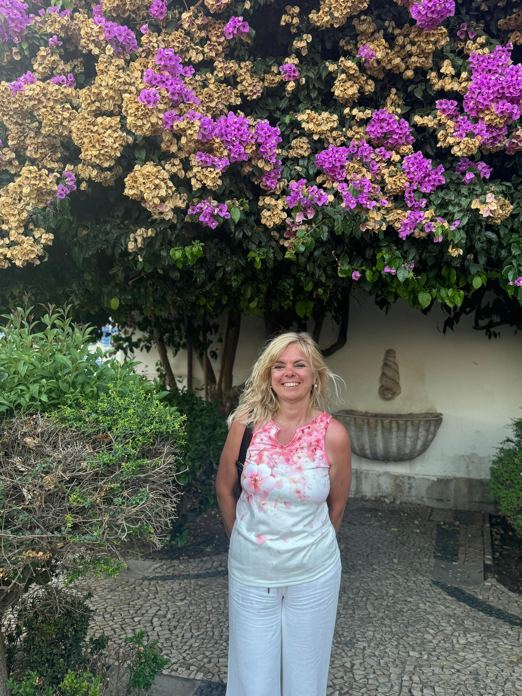

En un mundo futuro sin sentimientos, Laya e Izan todavÃa tienen el poder de soñar.
En un mundo futuro donde la ciencia y la razón lo son todo, los hombres han sido despojados de toda sensibilidad. Solo cuentan el progreso y la tecnologÃa. Pero no todo está perdido: Laya e Izan todavÃa tienen el poder de soñar.
A lo largo de tres novelas, su historia de amor se entrelaza con el pacto de cinco amigos y un proyecto que atraviesa el tiempo, en una trilogÃa que es también una radiografÃa de aquello en lo que podemos convertirnos como sociedad.
¿Puede crecer el amor en una sociedad sin sentimientos? ¿O está abocado al fracaso?
Esto es la TrilogÃa Contigo.
¿Quieres tu ejemplar firmado por la autora? EscrÃbele por sus redes y te lo cuenta todo.
Ver sus redes
Libro 1«Laya sabÃa que él la observaba ya que su piel se erizaba cuando lo sentÃa cerca. El tacto de sus manos sobre su cuerpo era una locura maravillosa que acabarÃa en el momento en que le confesara que se habÃan encontrado por una razón y que los dos juntos deberÃan cambiarlo todo».
«Sus ojos reflejaban su anhelo mientras la besaba lentamente. Esos ojos negros y profundos como un cielo sin estrellas, le llevaban más allá de lo que la razón le aconsejaba. Pero todo su juicio parecÃa haberse evaporado desde el momento en que la vio y sus miradas se cruzaron. Ahora que la tenÃa en sus brazos tendrÃa que averiguar cómo iba a cumplir su misión y matarla», pensaba Izan.
En un mundo futuro donde la ciencia y la razón se consideran supremas, la vida se organiza después de que los hombres hayan sido despojados de toda sensibilidad. Un mundo donde sólo cuentan el progreso y la tecnologÃa. Pero no todo está perdido, Laya e Izan tienen todavÃa el poder de soñar.
Contigo o sin ti es una acertada radiografÃa de aquello en lo que podemos convertirnos como sociedad. Frente a esto, Cristina Villar Losa nos propone a través de este libro una llamada a lo auténtico, a lo genuino de nosotros mismos.
«Cuando la miro, veo en ella el motor, la fuerza que me conduce a lo más alto. A su lado todo es posible. Ella es mi todo». Izan sentÃa que su corazón vibraba cuando Laya estaba cerca. Los dos interpretaban una misma sintonÃa.
«Con él puedo seguir adelante, él es mi apoyo, el que siempre está conmigo», pensaba Laya cuando lo miraba. Y, sin embargo, su separación está cada vez más cerca.
La vida comienza para Laya e Izan y un futuro juntos se dibuja en el horizonte. Sin embargo, no todo es tan sencillo y los cambios que se avecinan tendrán consecuencias que los llevarán a luchar por lo que han conseguido y su supervivencia como especie.
Mientras, en otro tiempo, cinco amigos unidos por un pacto darán comienzo a un proyecto que culminará años después. ¿Cómo influirán sus decisiones en lo que ocurrirá en el futuro?
¿Puede crecer el amor en una sociedad sin sentimientos? ¿O está abocado al fracaso?

Libro 3Laya ha sido enviada a un mundo del que no conoce nada mientras los que la rodean intentan traerla de vuelta. Izan no puede esperar y se lanza en un viaje desconocido hacia un mundo incierto.
Los cinco amigos han continuado con el proyecto de las bibliotecas y sus caminos se entrecruzarán con los de la pareja. ¿Qué relación guardan los misteriosos edificios con la situación de Izan y Laya?
El tiempo avanza imparable tejiendo un tapiz que los une a todos. Los hilos son invisibles, pero forman un entramado que necesitará de la intervención de todos sus ejes para encontrar un patrón único que conlleve a una solución.
«Luchaba, se ahogaba mientras el agua inundaba sus pulmones. No podÃa respirar y, cuando lo intentaba, más agua volvÃa a llenar el hueco que debÃa ocupar el aire. Pensó en dejarse ir, pero la imagen de Laya inundó su pensamiento y su cuerpo y su mente se rebelaron. ¿Cómo habÃa podido pensar algo asÃ? Ella estaba allà y él tenÃa que encontrarla. —Sin ti, no puedo».

Me llamo Cristina Villar Losa, nacà en San Sebastián en 1970, la madrugada de un 7 de julio, preparada para el chupinazo de San FermÃn. Mi afición por la lectura me viene desde muy temprana edad. Ya desde pequeña era capaz de "devorar" sin discriminación alguna todo tipo de libros. Después de una trayectoria formativa y profesional muy variada, mi vocación humana y educativa me ha llevado a trabajar en los últimos años realizando labores de apoyo a niños con algún tipo de discapacidad en colegios.
Soy la madre de dos hijas, maravillosas y únicas, a las que quiero con locura y que son lo mejor que me ha pasado en la vida. Me desesperan, me vuelven loca y me hacen la persona más feliz del mundo. Son mi orgullo y mi gran amor.
Mi vocación por la escritura me llevó hace muchos años a escribir poesÃa, género que comencé a alternar con el relato, en el que opté por hacer protagonistas de mis historias a todas mis amigas. Fui coautora del libro «Manual de recomendaciones para la búsqueda de orÃgenes», publicada por CORA (Coordinadora de asociaciones de adopción y acogimiento). «Contigo o sin ti» fue mi primera publicación en solitario.
En estos últimos años desde la aparición de mi primer libro, «Contigo o sin ti», he publicado varios relatos cortos y microrrelatos. He participado con uno de ellos en el libro Catorce de febrero, escrito para dicha fecha por varias autoras.
Asimismo, gané el año pasado el Concurso de relatos de terror organizado por Estamos leyendo, con el relato La mirada en el espejo. Confesarte que era la primera vez que escribÃa algo de este género y lo hice por insistencia de la escritora Teresa Pérez Landa, que no se dio por vencida hasta que lo envié; al final, tenÃa razón. Lo cedà a Tentetieso editoriales para publicar un compendio de relatos para recaudar dinero para los daños ocurridos tras la Dana, llamado «Escritos para la esperanza».
Ese mismo año publiqué la segunda parte de la trilogÃa Contigo: «Contigo, el comienzo» y, para no desesperar a los lectores, llega la tercera parte: «Contigo, más allá del tiempo».
Mi perfil en Instagram, por si queréis saber más de mÃ, es @contigocvlescribe.
Cristina comparte la trilogÃa y su dÃa a dÃa como escritora en Instagram. Pásate a saludar y pregúntale por tu ejemplar firmado.
Sumérgete en el mundo de Laya e Izan de principio a fin. Los tres libros están disponibles en Amazon.
¿Prefieres tu ejemplar firmado? EscrÃbele a Cristina por Instagram.